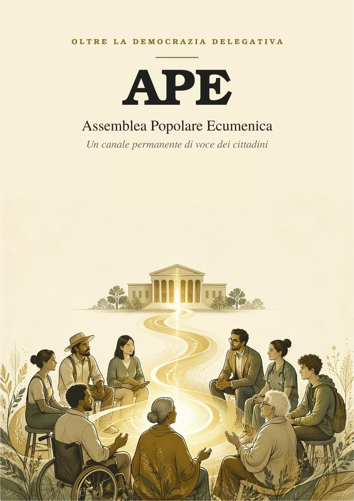

L’APE in cinque righe
Assemblee di cittadini comuni, estratti a sorte, in ogni Comune, in ogni Regione e a livello nazionale. Non fanno leggi e non governano: mandano direttive a Comuni, Regioni e Governo. Chi le riceve deve attuarle, oppure respingerle con un voto a maggioranza assoluta e una motivazione pubblica. Si paga abolendo il Senato. E se nessuno risponde, decidono i cittadini con un referendum.
Un esempio, inventato per capirci. Un gruppo di genitori chiede un attraversamento pedonale sicuro davanti alla scuola. Porta la proposta allo sportello del Comune, che la registra in modo pubblico. L’assemblea del Comune la esamina e, se la approva, la trasforma in una direttiva. A quel punto il Comune ha due strade: la realizza, oppure la respinge votando a maggioranza assoluta e spiegando pubblicamente perché. Far finta di niente non è più possibile.
Come funziona, passo per passo
- Il cittadino porta una proposta allo sportello del suo Comune, che la registra con ricevuta.
- L’assemblea sorteggiata la esamina in sedute pubbliche, ascoltando esperti e cittadini.
- Se la approva, diventa una direttiva, pubblicata entro 24 ore.
- L’istituzione deve rispondere: la attua, oppure la respinge con un voto a maggioranza assoluta e una motivazione pubblica.
- Un organo indipendente verifica che quello che è stato deciso venga fatto davvero.
- Se tutto si ferma per 120 giorni, si può chiedere un referendum: decidono i cittadini.
L’APE non è
✗ un partito✗ un governo
✗ un secondo Parlamento
✗ un organo che fa leggi
L’APE è
✓ cittadini sorteggiati✓ partecipazione permanente
✓ obbligo di risposta
✓ controllo di quello che si fa
L’APE in sei minuti
Cittadini sorteggiati, istituzioni obbligate a rispondere, referendum senza quorum, e i punti deboli che la proposta stessa riconosce.
Tocca a noi
Da troppo tempo nessuno ascolta una voce. La tua. Per cambiare le cose non serve un salvatore. Non arriverà. Serviamo noi, tutti, alla pari. Possiamo essere i leader di noi stessi. Tocca a noi.
Ma allora…?
È un partito?
No. Non presenta candidati e non si vota. Anzi: chi è iscritto a un partito, o ha avuto cariche politiche nei due anni precedenti, non può essere sorteggiato.
Toglie potere al Parlamento?
Non lo sostituisce e non fa leggi. Le direttive non obbligano a dire sì: obbligano a rispondere. Non vincolano il voto del singolo parlamentare, ma l’indirizzo del Governo.
Chi ci entra?
Cittadini estratti a sorte dalle liste elettorali, con un equilibrio di età, genere e territorio: oltre 46.000 persone in più di 6.500 assemblee. Nessuno è eletto.
Quanto costa?
A regime 252 milioni l’anno. Il Senato, che la riforma abolisce, nei conti della proposta ne costa 541: il risparmio stimato con prudenza è di 250-260 milioni l’anno. Sulla carta sarebbe 289, ma alcune spese del Senato, come immobili e pensioni già maturate, non spariscono.
E se il Governo non risponde?
Se una direttiva resta ferma per 120 giorni, senza essere accolta e senza un rifiuto motivato, si può chiedere un referendum propositivo: lo chiedono due terzi dell’assemblea nazionale oppure 500.000 cittadini. Vale senza quorum, e se passa il Governo ha 180 giorni per attuarla.
Chi viene sorteggiato perde il lavoro?
È uno dei punti deboli che la proposta stessa dichiara: chi viene sorteggiato non deve rimetterci stipendio o posto, e dovrà garantirlo la legge che attua la riforma.
È già legge?
No, è una proposta. Serve una riforma della Costituzione approvata dal Parlamento. La strada scelta è la legge di iniziativa popolare: servono 50.000 firme, l’obiettivo è raccoglierne dieci volte tante.
Vuoi capire tutto?

Il libro, di prossima pubblicazione. La sintesi si può già scaricare qui sotto.
Un’idea che appartiene a chi la firma
Ogni progetto nasce da qualcuno, ma vive solo se diventa di tutti. L’APE è nata come proposta: da oggi è di chi la fa propria. «Ecumenica» vuol dire aperta a tutti, senza distinzioni: per questo ha una casa sua, neutra, senza simboli né bandiere. Un’unione d’intenti, non di simboli o di schieramenti.
La Rete APE non si eredita: si fonda insieme. Chi aderisce firma il Patto fondativo ed entra nell’Albo dei co-fondatori, in ordine alfabetico, senza primi e senza ultimi: può dire «questo progetto è anche mio, l’ho fondato anch’io». Il testo resta aperto: ogni co-fondatore può proporre miglioramenti, e si decide con peso paritario.
Il Progetto APE, spiegato per intero
In undici minuti, con i documenti sullo schermo: il problema dell’astensione, le radici storiche del sorteggio, come funzionano le direttive vincolanti, le tre leggi costituzionali, i costi, le domande più frequenti e i punti deboli dichiarati dalla proposta stessa. Per approfondire c’è la sintesi del volume, qui sotto.
Il progetto per intero
Tutti i dettagli, capitolo per capitolo:
- Il problema che l'APE vuole risolvere
- Cos'è l'APE, e cosa non è
- Il sorteggio, non l'elezione
- Tre livelli coordinati, ciascuno col suo interlocutore
- Il ciclo della direttiva: voce, direttiva, risposta, verifica, referendum
- Indennità e permessi di lavoro
- Tre leggi insieme: l'APE, il Senato, il referendum propositivo
- Difese contro lo svuotamento e contro il carrozzone
- I costi, detti con onestà
- Cosa insegna il mondo
La Rete APE: una chiamata unitaria
Siamo nella fase di massima diffusione: si parla a tutti i cittadini, e in particolare alle tante piccole associazioni che da sole pesano poco e insieme possono incidere. Per questo c’è una rete che invita singoli cittadini, associazioni, movimenti e comitati civici a condividere questi principi, con peso paritario per ogni soggetto aderente: nessuna gerarchia, nessuna proprietà del progetto. Non è la proposta di un movimento che chiede sostegno: è una chiamata a costruire insieme, da attivisti e sostenitori alla pari, uno strumento istituzionale vero attraverso cui i cittadini abbiano finalmente voce.
Il documento, in una frase
L'APE non promette che le proposte dei cittadini vengano approvate — sarebbe falso. Promette qualcosa di più solido e verificabile: che nessuna direttiva possa essere ignorata in silenzio, che chi la respinge debba farlo con un voto a maggioranza assoluta e una motivazione pubblica, che l'attuazione sia controllata da un organo indipendente, e che, se tutto si ferma, la decisione torni ai cittadini.
Non un salvatore. Noi. I leader di noi stessi. Il documento integrale, con le formule costituzionali e tutte le garanzie, è disponibile per il download in questa pagina. Il testo completo delle tre leggi è nel volume, di prossima pubblicazione.